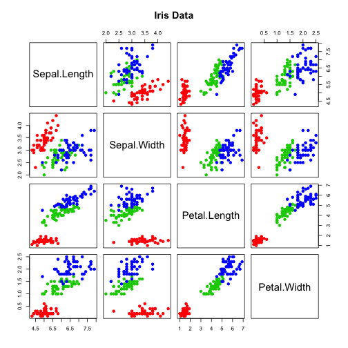

Prove that you are not a robot, what is a+b?
- "a"+b
- "a"+"b"
- "ab"
- ab
ignore the quotes
Bruno Gomes
Prove that you are not a robot, what is a+b?
ignore the quotes
This application started out basic, developed nicely and was made basic again, I will list the reasons:
Just checking if the presentation did not make you fall asleep yet:
click the explanation
the square root if 9 is 3 It them becomes 45
You will find the following chart which you can turn from black and white to colored:

The application is actually quite interesting when the prediction is done. If you check github and look at the previous branch you will be able to download and execute the predictive application independent from shinyapps.io.
Thank you for your time